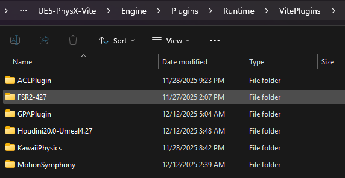
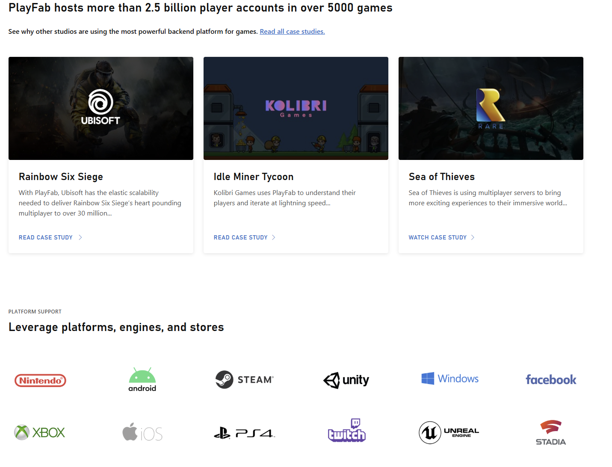
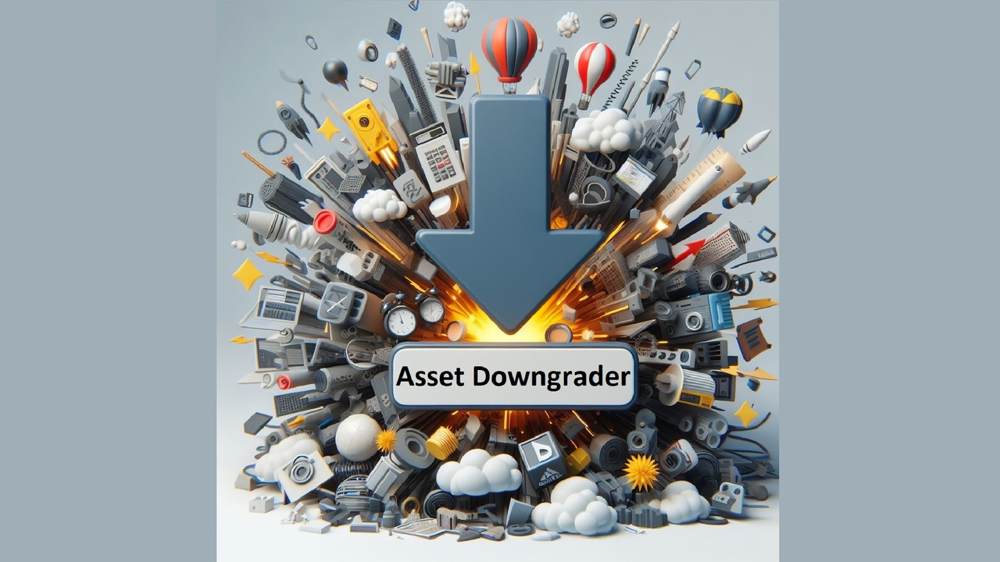
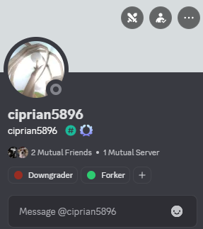
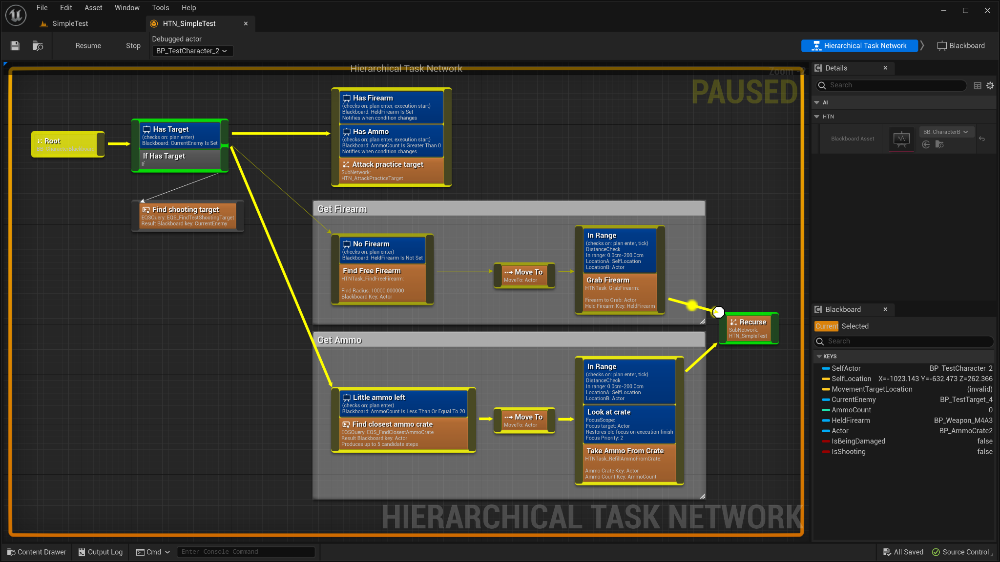
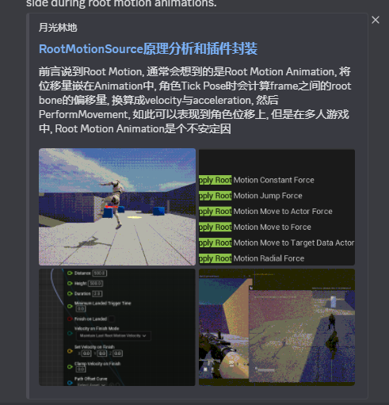

提议的插件
此处列出了可打包到引擎中的插件候选列表，以及推荐项目自行添加的插件。所有插件必须兼容 UE 4.21 至 4.27 版本——仅适用于 UE5 的插件不在讨论范围内。
并非所有有用的插件都应该放在引擎仓库中。与 Vite 打包的插件会增加每个克隆项目的大小、每次构建所需的时间以及每次集成所需的工作量。此页面用于跟踪已提交的插件及其所属层级。

资源管理器视图显示Engine\Plugins\Runtime\VitePlugins 目录下的集成插件文件夹
层级
-
引擎仓库
核心功能和原生运行时。体积小、编译速度快，几乎适用于所有人。这些功能会被打包——参见已捆绑的插件。
-
基础功能
与通用游戏制作相关，常用于 AAA 级游戏，代表主要功能。如果许可和大小允许，则值得打包；否则，应提供文档以便团队自行添加。
-
常用功能
非必要或高级工具，通常是蓝图扩展。项目自行添加这些功能。
常用插件
PhysX 实例化子系统 — 集成，免费
一个世界子系统，外加实例化 Actor 工作流程，用于管理大量基于 PhysX 的实例化刚体。无需生成数千个独立的 AActor/UPrimitiveComponent 对象，只需保留一个或几个实例化网格 Actor 用于渲染，子系统即可创建和更新每个实例的 PhysX 刚体，并将其姿态写回 ISM/HISM 实例变换。
已在 1.11 版本集成。参见实例化物理。
Houdini 引擎 — 集成，可商用/免费使用
通过 Houdini 数字资产实现程序化工作流程。艺术家在编辑器中交互式地调整资产参数，并使用虚幻引擎资产作为输入；Houdini 的程序化引擎会处理资产，结果无需烘焙即可显示在编辑器中。
HoudiniEngineForUnreal，Houdini 20.0 / Unreal 4.27 分支
Motion Symphony — 集成
育碧（Ubisoft）风格的动作匹配和姿势匹配。已包含在 1.09 版本中；请参阅已捆绑的插件。
PopcornFX — 商用/免费使用
专有粒子系统，已应用于包括暴雪游戏和赛车游戏在内的多款 AAA 级游戏中。2.18.6 版本是最新完全兼容 4.27 版本的版本。GPU 性能优于 Niagara。
仓库 · v2.18.6 下载
bunnyofficial 提供的补丁版本修复了一个编译错误：补丁版本。
Azure PlayFab — 商用/免费使用
用于实时游戏的后端平台：玩家身份验证、数据存储、匹配、多人网络、分析和 LiveOps（例如活动和 A/B 测试），基于 Azure 基础架构。

Azure PlayFab 后端服务概述Wwise — 商用/免费使用
游戏音频中间件的事实标准，数百款游戏已采用 Wwise。
资产降级器（Asset Downgrader） — 付费
将资源降级到 5.6.1、5.5.4、5.4.4、5.3.2、5.2.1、5.1.1、5.0.3、4.27 和 4.26 版本。它首先将资源升级到源版本 (5.6)，然后对 .uasset 文件应用补丁，使其与目标版本兼容，但会移除较新的数据——例如，降级到 4.27 版本时会移除 Nanite 数据。
警告： 旧版本中不存在的功能无法移植：例如，蒙版材质上的 Nanite、新的材质节点和新的 Niagara 模块。降级器仅迁移数据，不迁移功能。

Asset Downgrader 插件界面显示目标版本选择，降级工具支持的目标版本从 5.6.1 降级到 4.26。
这是在 Vite 中使用 UE5 商城内容的实用方法。请参阅从 UE5 迁移。作者 Ciprian Stanciu 活跃于 Vite Discord 社区，并为多个 Vite 项目提供过直接帮助。

Vite Discord 上的 Asset Downgrader 作者
HTN Planner — FAB / 付费
适用于 Unreal 的分层任务网络 AI 框架。目标驱动型策略，将“做什么”与“怎么做”分离。1.18.3 版本最近已向后移植到 4.27 版本。

Unreal 编辑器中的 HTN （hierarchical task network ）Planner 任务网络。层级式任务网络将目标与实现目标的方法分离，这使得计划能够在不同智能体之间进行组合。
常用插件
这些插件推荐使用，但未包含在项目中。请根据项目需要单独添加。
FFMPEG 媒体播放器
支持比原生媒体框架更多的视频格式和 Alpha 通道视频。
UI 导航
基于蓝图的 UI 导航，支持游戏手柄和键盘菜单浏览。
goncasmage1/UINavigation, 4.27 分支
多人游戏移动 (SMN2)
蓝图多人游戏移动。官方支持到 4.26 版本，但也能在 4.27 版本上编译运行，并且可以进一步扩展。上游已弃用。
Root Motion Source（根运动源）
在 4.26 和 4.27 版本上功能齐全，相当于 UE5 的运动扭曲功能。在原生 UE4 中，根运动源只能通过 GAS 正确连接；此插件覆盖了这一限制，并将完整的根运动源功能直接暴露在蓝图中。
在网络延迟较高的环境下进行的现场测试表明，遵循正常的 CMC 逻辑可以在根运动动画期间获得清晰的结果，不会出现抖动或服务器端校正。

根运动源（Root Motion Source）蓝图节点
VJien/RootMotionSource · write-up
提交一个插件提议
提交提案前，请检查：
| 标准 | 要求 |
|---|---|
| 引擎版本 | 兼容 4.21–4.27 版本。仅限 UE5 版本不在考虑范围内。 |
| 许可 | 可再分发，或明确说明用户需自行获取。 |
| 大小 | 捆绑插件会被所有人克隆。大型二进制依赖项需要说明理由。 |
| 编译成本 | 增加每次引擎构建的成本。请参阅着色器编译和 PSO。 |
| 重复 | 是否与已捆绑或默认功能重复？ |
然后说明你认为它应该属于哪个层级，并解释原因。